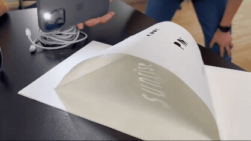

Q: What will you make for the final?
For my final project, I am collaborating with Devan and document how others understand, experience, and
organize time.
Through our brainstorming process, we found a few common themes that lay within our interest venn
diagram:
- pen to paper - writing, paper engineering - analog methods of documentation
- the organization of time - calendars, hourly timelines - planners
Our methodology:
- Conduct interviews and/or collect responses to creative prompts about units of time (seconds, minutes, hours, years, seasons, etc...)
- Sort and synthesize the responses for common threads and creative inspiration for our final objects
- Design and fabricate an interactive physical book and/or box set of small books to visualize our findings
Inspiration:
Alphabet in Motion by Kelli
Anderson
Dear Data by Giorgia Lupi and Stefanie
Posavec
The Hobonichi How
It's Used
Recap of the last 5 weeks
Synthesizing the past 5 weeks of projects: Like all of the things that I have made here at ITP, and even
before - I tend to gravitate towards hand crafting techniques. I have been enjoying how these methods
and mediums have really forced me to slow down and be deliberate with my time.
Showing the progression of time with obvious and nonspecific information rather than the conventional denotation system. (week 1: sundial)

Cataloging and the sweater timeline was also an interesting way of contextualizing time. Measuring time with an activity rather than clock or grid time. (week 2: artificial time patterns)

Visual presentation of time through the blend of natural phenomena through the lense of the human
experience and infrastructure. (week 5: clock face)
(I often associate the passage of time through the way light shines through the window)